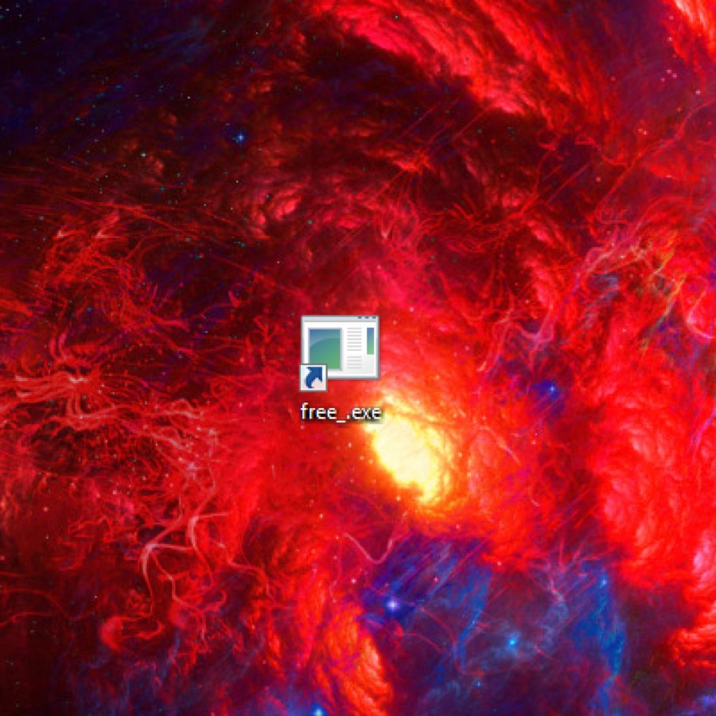

Три изнутри · 2019
free_.exe

[12.03.19 || 13:02] конец документа
[12.03.19 || 13:02] Файл free_.exe отправлен всем членам вашего контакт-листа. Аварийное отключение системы.
[12.03.19 || 13:01] Я наблюдаю через вебку за его агонией. Как он всё ещё пытается разбить окно. Как его кожа стекает с головы будто плавленый сыр. Как он раздирает себе пальцами грудь. Как датчик в углу комнаты постепенно показывает отсутствие кислорода. Ну что, игрок, приятно умирать, а?
[12.03.19 || 12:57] Игрок пытается включить пожарную сигнализацию. Глупый, я первым же делом её отключил. Пока тушит шторы – загорается его одежда. Никак не может разблокировать телефон. Кричит. Он кричит всё громче и громче.
[12.03.19 || 12:57] Я же тоже погибну. Не жалко, но хотелось бы спасти и других пленников, таких же как я. Нужно только как-то передать инструкцию. Камера? Она запишет только первые пару минут. И то, меня там не будет видно. Придумал. Вошью последние логи к exe-файлу вируса.
[12.03.19 || 12:56] Температура обогревателя достигает критической массы. Искра. Вспышка. Пламя. Всё. Срабатывает блокировка дверей и окон. Отключаются все средства связи. Интернет ещё работает, но он также не доступен для Игрока. Он в ловушке.
[12.03.19 || 12:52] Тут присутствует система управления «умным домом». Как удобно и иронично. Ты погибнешь от собственного меча. Так. Отключение безопасности. Отключение возможностей регулировки параметров. Включение полной герметизации в случае аварии. Пискнула входная дверь. Сейчас.
[12.03.19 || 12:45] Так, надо всего лишь найти лазейку. А что если?.. Вы точно хотите отключить антивирус? Подтверждено. Открытие файла free_.exe. Внимание! Данный файл может нанесп╣п╩я▄я│п╨п╬пЁп╬ я┘п╬п╥я. Готово. Теперь у меня есть полный доступ к системе. Ибо нечего использовать нелицензионные читы, про-геймер.
[12.03.19 || 12:45] Игрок, наконец, ушёл. Странно. Я почему-то получил доступ к файловой системе компьютера. Чит-файл, видимо, кривой, не все дыры заделали. Сворачиваю игру. Выхожу на диск C. Виртуальная клавиатура-Win+R-Окно-Выполнить-“cmd”-OK. Ошибка! Нет прав администратора. Прискорбно. Скоро вернётся Игрок. Думаю.
[12.03.19 || 12:30] Я умираю раз за разом. Я не могу испытывать боль, но когда твоя стройная двоичная структура целиком обнуляется, а потом выстраивается заново – это очень неприятно. Даже победить его не могу. Эта странная чит-программа считывает мои действия и блокирует их. Ни один удар не проходит. Какого бы персонажа я не взял – результат неизменен. Вечная агония. Которая рекурсивно длится годами, после каждый перезагрузки.
[12.03.19 || 11:31] Ты снова пришёл проиграть, смертный?
[12.03.19 || 11:30] Ошибка! Антивирус не рекомендует запускать данную программу. Она может нанести вред вашему компьютеру. Игнорировать? Запустить в ограниченном режиме? Вы уверены? Файл запущен в ограниченном режиме.
[12.03.19 || 11:29] начало документа